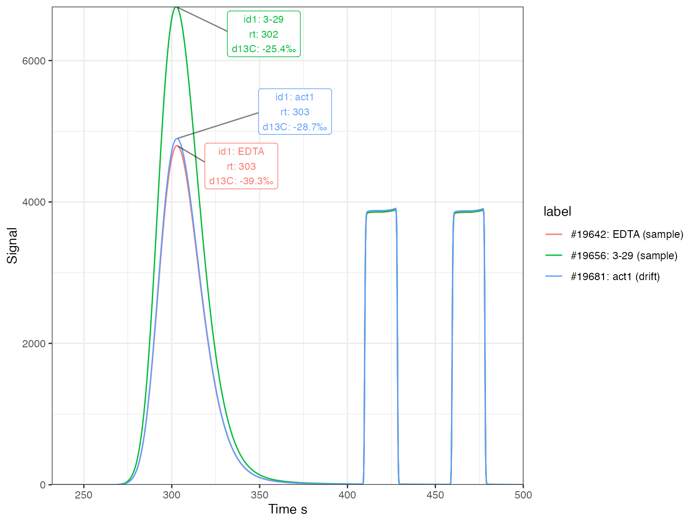

EA-IRMS data processing example: carbon
bulk carbon isotopes
2021-03-04
Source:vignettes/ea_irms_example_carbon.Rmd
ea_irms_example_carbon.RmdIntroduction
This is an example of a data processing pipeline for bulk Elemental Analyser Isotope Ratio Mass Spectrometry (EA-IRMS) carbon isotope measurements. It can be downloaded as a template (or just to see the plain-text code) by following the Source link above. Knitting for stand-alone data analysis works best to HTML rather than the website rendering you see here. To make this formatting change simply delete line #6 in the template file (the line that says rmarkdown::html_vignette:).
Note that all code chunks that contain a critical step towards the final data (i.e. do more than visualization or a data summary) are marked with (*) in the header to make it easier to follow all key steps during interactive use.
This example was run using isoreader version 1.3.0 and isoprocessor version 0.6.11. If you want to reproduce the example, please make sure that you have these or newer versions of both packages installed:
# restart your R session (this command only works in RStudio)
.rs.restartR()
# installs the development tools package if not yet installed
if(!requireNamespace("devtools", quietly = TRUE)) install.packages("devtools")
# installs the newest version of isoreader and isoprocessor
devtools::install_github("isoverse/isoreader")
devtools::install_github("isoverse/isoprocessor")Load data
Read raw data files (*)
# set file path(s) to data files, folders or rds collections
# can be multiple folders or mix of folders and files, using example data set here
data_path <- iso_get_processor_example("ea_irms_example_carbon.cf.rds")
# read files
iso_files_raw <-
# path to data files
data_path %>%
# read data files in parallel for fast read
iso_read_continuous_flow() %>%
# filter out files with read errors (e.g. from aborted analysis)
iso_filter_files_with_problems()
#> Info: preparing to read 1 data files (all will be cached)...
#> Info: reading file 'ea_irms_example_carbon.cf.rds' with '.cf.rds' reader...
#> Info: loaded 121 data files from R Data Storage
#> Info: finished reading 1 files in 0.46 secs
#> Info: removing 0/121 files that have any error (keeping 121)Process file info & peak table (*)
Peak Table
# process peak table
iso_files_w_peak_table <- iso_files_raw %>%
# set peak table from vendor data table
iso_set_peak_table_automatically_from_vendor_data_table() %>%
# convert units from mV to V for amplitudes and area
iso_convert_peak_table_units(V = mV, Vs = mVs)
#> Info: setting peak table for 121 file(s) from vendor data table with the following renames:
#> - for 121 file(s): 'Nr.'->'peak_nr', 'Is Ref.?'->'is_ref', 'Start'->'rt_start', 'Rt'->'rt', 'End'->'rt_end', 'Ampl 28'->'amp28', 'Ampl 29'->'amp29', 'Ampl 30'->'amp30', 'Ampl 44'->'amp44', 'Ampl 45'->'amp45', 'Ampl 46'->'amp46', 'BGD 28'->'bgrd28_start', 'BGD 29'->'bgrd29_start', 'BGD 30'->'bgrd30_start', 'BGD 44'->'bgrd44_start', 'BGD 45'->'bgrd45_start', 'BGD 46'->'bgrd46_start', 'BGD 28'->'bgrd28_end', 'BGD 29'->'bgrd29_end', 'BGD 30'->'bgrd30_end', 'BGD 44'->'bgrd44_end', 'BGD 45'->'bgrd45_end', 'BGD 46'->'bgrd46_end', 'rIntensity 28'->'area28', 'rIntensity 29'->'area29', 'rIntensity 30'->'area30', 'rIntensity 44'->'area44', 'rIntensity 45'->'area45', 'rIntensity 46'->'area46', 'rR 29N2/28N2'->'r29/28', 'rR 45CO2/44CO2'->'r45/44', 'rR 46CO2/44CO2'->'r46/44', 'rd 29N2/28N2'->'rd29/28', 'rd 45CO2/44CO2'->'rd45/44', 'rd 46CO2/44CO2'->'rd46/44', 'd 29N2/28N2'->'d29/28', 'd 45CO2/44CO2'->'d45/44', 'd 46CO2/44CO2'->'d46/44', 'd 15N/14N'->'d15N', 'd 13C/12C'->'d13C', 'd 18O/16O'->'d18O', 'd 17O/16O'->'d17O', 'AT% 15N/14N'->'at15N', 'AT% 13C/12C'->'at13C', 'AT% 18O/16O'->'at18O'
#> Info: converting peak table column units where applicable from 'mV'->'V' and 'mVs'->'Vs' for columns matching 'everything()'File Info
# process file information
iso_files_w_file_info <- iso_files_w_peak_table %>%
# rename key file info columns
iso_rename_file_info(
id1 = `Identifier 1`, id2 = `Identifier 2`, prep = Preparation,
seq_nr = Row, analysis = Analysis
) %>%
# parse text info into numbers
iso_parse_file_info(number = c(seq_nr, analysis)) %>%
# process specific sequence file information
iso_mutate_file_info(
# what is the type of each analysis?
type = case_when(
id1 == "empty" ~ "empty",
id1 == "blank" ~ "blank",
prep == "lin.std" ~ "linearity",
prep == "drift.std" ~ "drift",
id1 == "pugel" ~ "scale1",
id1 == "EDTA2" ~ "scale2",
TRUE ~ "sample"
),
# what is the mass of the sample?
mass = parse_number(id2) %>% iso_double_with_units("ug"),
# what folder are the data files in? (usually folder = sequence)
folder = basename(dirname(file_path))
) %>%
# focus only on the relevant file info, discarding the rest
iso_select_file_info(folder, analysis, seq_nr, file_datetime, id1, id2, type, mass)
#> Info: renaming the following file info across 121 data file(s): 'Identifier 1'->'id1', 'Identifier 2'->'id2', 'Preparation'->'prep', 'Row'->'seq_nr', 'Analysis'->'analysis'
#> Info: parsing 2 file info columns for 121 data file(s):
#> - to number: 'seq_nr', 'analysis'
#> Info: mutating file info for 121 data file(s)
#> Info: selecting/renaming the following file info across 121 data file(s): 'folder', 'analysis', 'seq_nr', 'file_datetime', 'id1', 'id2', 'type', 'mass'File Filter
# filter out files we don't want to process futher
iso_files_without_empty <- iso_files_w_file_info %>%
# filter out emptys at the beginning of the run
iso_filter_files(type != "empty")
#> Info: applying file filter, keeping 118 of 121 filesPeak Mapping
# identify peaks
peak_map <-
tibble::tribble(
~compound, ~ref_nr, ~rt,
# peak map data (row-by-row)
"CO2 analyte", NA, 300,
"CO2 ref", 1, 415,
"CO2 ref", 2, 465
)
peak_map %>% knitr::kable(digits = 0)| compound | ref_nr | rt |
|---|---|---|
| CO2 analyte | NA | 300 |
| CO2 ref | 1 | 415 |
| CO2 ref | 2 | 465 |
iso_files_w_mapped_peaks <- iso_files_without_empty %>% iso_map_peaks(peak_map)
#> Info: 354 of 707 peaks in 118 files were successfully mapped using a single peak map. 353 peak(s) could not be mapped.
# show first few rows of the peak mappings summary (unmapped peaks = N2)
iso_files_w_mapped_peaks %>%
iso_summarize_peak_mappings() %>%
head(10) %>%
knitr::kable()| file_id | mapped | ambiguous | missing | peak_info |
|---|---|---|---|---|
| 19602__blank_0.dxf | 3/6 | 0/3 | 0/3 | ?? (58.94), ?? (108.7), ?? (186.2), CO2 analyte (304.7), CO2 ref (427.2), CO2 ref (477.1) |
| 19603__acn1_44.dxf | 3/6 | 0/3 | 0/3 | ?? (58.94), ?? (108.7), ?? (156.8), CO2 analyte (304.1), CO2 ref (427.4), CO2 ref (477.1) |
| 19604__EDTA2_70.dxf | 3/6 | 0/3 | 0/3 | ?? (58.94), ?? (108.7), ?? (156.5), CO2 analyte (303.9), CO2 ref (427.4), CO2 ref (477.1) |
| 19605__pugel_73.dxf | 3/6 | 0/3 | 0/3 | ?? (58.94), ?? (108.7), ?? (156.5), CO2 analyte (304.1), CO2 ref (427.4), CO2 ref (477.1) |
| 19606__acn1_9.dxf | 3/6 | 0/3 | 0/3 | ?? (58.94), ?? (108.7), ?? (157.4), CO2 analyte (304.7), CO2 ref (427.4), CO2 ref (477.1) |
| 19607__acn1_22.dxf | 3/6 | 0/3 | 0/3 | ?? (58.94), ?? (108.7), ?? (156.3), CO2 analyte (303.9), CO2 ref (427.4), CO2 ref (477.1) |
| 19608__acn1_30.dxf | 3/6 | 0/3 | 0/3 | ?? (58.94), ?? (108.7), ?? (156.8), CO2 analyte (304.1), CO2 ref (427.4), CO2 ref (477.1) |
| 19609__acn1_39.dxf | 3/6 | 0/3 | 0/3 | ?? (58.94), ?? (108.7), ?? (156.3), CO2 analyte (303.5), CO2 ref (427.4), CO2 ref (477.1) |
| 19610__acn1_47.dxf | 3/6 | 0/3 | 0/3 | ?? (58.94), ?? (108.7), ?? (156.8), CO2 analyte (303.7), CO2 ref (427.4), CO2 ref (477.1) |
| 19611__acn1_62.dxf | 3/6 | 0/3 | 0/3 | ?? (58.94), ?? (108.7), ?? (156.1), CO2 analyte (303), CO2 ref (427.4), CO2 ref (477.1) |
# assign final collection of iso_files to a simpler name
iso_files <- iso_files_w_mapped_peaksShow file information
# display file information
iso_files %>%
iso_get_file_info() %>%
iso_make_units_explicit() %>%
knitr::kable()
#> Info: aggregating file info from 118 data file(s)| file_id | folder | analysis | seq_nr | file_datetime | id1 | id2 | type | mass [ug] |
|---|---|---|---|---|---|---|---|---|
| 19602__blank_0.dxf | 190625_EA_data | 19602 | 4 | 2019-06-25 15:51:45 | blank | 0 | blank | 0 |
| 19603__acn1_44.dxf | 190625_EA_data | 19603 | 5 | 2019-06-25 16:01:29 | acn1 | 44 | drift | 44 |
| 19604__EDTA2_70.dxf | 190625_EA_data | 19604 | 6 | 2019-06-25 16:11:14 | EDTA2 | 70 | scale2 | 70 |
| 19605__pugel_73.dxf | 190625_EA_data | 19605 | 7 | 2019-06-25 16:20:59 | pugel | 73 | scale1 | 73 |
| 19606__acn1_9.dxf | 190625_EA_data | 19606 | 8 | 2019-06-25 16:30:44 | acn1 | 9 | linearity | 9 |
| 19607__acn1_22.dxf | 190625_EA_data | 19607 | 9 | 2019-06-25 16:40:28 | acn1 | 22 | linearity | 22 |
| 19608__acn1_30.dxf | 190625_EA_data | 19608 | 10 | 2019-06-25 16:50:13 | acn1 | 30 | linearity | 30 |
| 19609__acn1_39.dxf | 190625_EA_data | 19609 | 11 | 2019-06-25 16:59:57 | acn1 | 39 | linearity | 39 |
| 19610__acn1_47.dxf | 190625_EA_data | 19610 | 12 | 2019-06-25 17:09:45 | acn1 | 47 | linearity | 47 |
| 19611__acn1_62.dxf | 190625_EA_data | 19611 | 13 | 2019-06-25 17:19:34 | acn1 | 62 | linearity | 62 |
| 19612__acn1_70.dxf | 190625_EA_data | 19612 | 14 | 2019-06-25 17:29:19 | acn1 | 70 | linearity | 70 |
| 19613__acn1_79.dxf | 190625_EA_data | 19613 | 15 | 2019-06-25 17:39:23 | acn1 | 79 | linearity | 79 |
| 19614__acn1_93.dxf | 190625_EA_data | 19614 | 16 | 2019-06-25 17:49:07 | acn1 | 93 | linearity | 93 |
| 19615__acn1_114.dxf | 190625_EA_data | 19615 | 17 | 2019-06-25 17:58:52 | acn1 | 114 | linearity | 114 |
| 19616__EDTA2_74.dxf | 190625_EA_data | 19616 | 18 | 2019-06-25 18:08:36 | EDTA2 | 74 | scale2 | 74 |
| 19617__acn1_45.dxf | 190625_EA_data | 19617 | 19 | 2019-06-25 18:18:20 | acn1 | 45 | drift | 45 |
| 19618__3-1_81.dxf | 190625_EA_data | 19618 | 20 | 2019-06-25 18:28:05 | 3-1 | 81 | sample | 81 |
| 19619__3-2_65.dxf | 190625_EA_data | 19619 | 21 | 2019-06-25 18:39:47 | 3-2 | 65 | sample | 65 |
| 19620__3-3_79.dxf | 190625_EA_data | 19620 | 22 | 2019-06-25 18:49:32 | 3-3 | 79 | sample | 79 |
| 19621__3-4_91.dxf | 190625_EA_data | 19621 | 23 | 2019-06-25 18:59:16 | 3-4 | 91 | sample | 91 |
| 19622__3-5_92.dxf | 190625_EA_data | 19622 | 24 | 2019-06-25 19:09:01 | 3-5 | 92 | sample | 92 |
| 19623__3-6_111.dxf | 190625_EA_data | 19623 | 25 | 2019-06-25 19:18:45 | 3-6 | 111 | sample | 111 |
| 19624__acn1_44.dxf | 190625_EA_data | 19624 | 26 | 2019-06-25 19:28:29 | acn1 | 44 | drift | 44 |
| 19625__EDTA2_71.dxf | 190625_EA_data | 19625 | 27 | 2019-06-25 19:38:14 | EDTA2 | 71 | scale2 | 71 |
| 19626__3-7_89.dxf | 190625_EA_data | 19626 | 28 | 2019-06-25 19:47:59 | 3-7 | 89 | sample | 89 |
| 19627__3-8_90.dxf | 190625_EA_data | 19627 | 29 | 2019-06-25 19:57:43 | 3-8 | 90 | sample | 90 |
| 19628__3-9_90.dxf | 190625_EA_data | 19628 | 30 | 2019-06-25 20:07:27 | 3-9 | 90 | sample | 90 |
| 19629__3-10_100.dxf | 190625_EA_data | 19629 | 31 | 2019-06-25 20:17:12 | 3-10 | 100 | sample | 100 |
| 19630__3-11_68.dxf | 190625_EA_data | 19630 | 32 | 2019-06-25 20:26:56 | 3-11 | 68 | sample | 68 |
| 19631__3-12_81.dxf | 190625_EA_data | 19631 | 33 | 2019-06-25 20:36:45 | 3-12 | 81 | sample | 81 |
| 19632__acn1_44.dxf | 190625_EA_data | 19632 | 34 | 2019-06-25 20:46:29 | acn1 | 44 | drift | 44 |
| 19633__pugel_69.dxf | 190625_EA_data | 19633 | 35 | 2019-06-25 20:56:13 | pugel | 69 | scale1 | 69 |
| 19634__EDTA2_73.dxf | 190625_EA_data | 19634 | 36 | 2019-06-25 21:05:58 | EDTA2 | 73 | scale2 | 73 |
| 19635__3-13_85.dxf | 190625_EA_data | 19635 | 37 | 2019-06-25 21:15:42 | 3-13 | 85 | sample | 85 |
| 19636__3-14_52.dxf | 190625_EA_data | 19636 | 38 | 2019-06-25 21:25:27 | 3-14 | 52 | sample | 52 |
| 19637__3-15_42.dxf | 190625_EA_data | 19637 | 39 | 2019-06-25 21:35:11 | 3-15 | 42 | sample | 42 |
| 19638__3-16_85.dxf | 190625_EA_data | 19638 | 40 | 2019-06-25 21:44:55 | 3-16 | 85 | sample | 85 |
| 19639__3-17_109.dxf | 190625_EA_data | 19639 | 41 | 2019-06-25 21:55:21 | 3-17 | 109 | sample | 109 |
| 19640__3-18_102.dxf | 190625_EA_data | 19640 | 42 | 2019-06-25 22:05:05 | 3-18 | 102 | sample | 102 |
| 19641__acn1_45.dxf | 190625_EA_data | 19641 | 43 | 2019-06-25 22:14:49 | acn1 | 45 | drift | 45 |
| 19642__EDTA_74.dxf | 190625_EA_data | 19642 | 44 | 2019-06-25 22:24:34 | EDTA | 74 | sample | 74 |
| 19643__3-19_92.dxf | 190625_EA_data | 19643 | 45 | 2019-06-25 22:34:18 | 3-19 | 92 | sample | 92 |
| 19644__blank_0.dxf | 190625_EA_data | 19644 | 46 | 2019-06-25 22:44:03 | blank | 0 | blank | 0 |
| 19645__3-20_82.dxf | 190625_EA_data | 19645 | 47 | 2019-06-25 22:53:47 | 3-20 | 82 | sample | 82 |
| 19646__3-21_98.dxf | 190625_EA_data | 19646 | 48 | 2019-06-25 23:03:32 | 3-21 | 98 | sample | 98 |
| 19647__3-22_71.dxf | 190625_EA_data | 19647 | 49 | 2019-06-25 23:13:16 | 3-22 | 71 | sample | 71 |
| 19648__3-23_74.dxf | 190625_EA_data | 19648 | 50 | 2019-06-25 23:23:00 | 3-23 | 74 | sample | 74 |
| 19649__acn1_44.dxf | 190625_EA_data | 19649 | 51 | 2019-06-25 23:32:45 | acn1 | 44 | drift | 44 |
| 19650__EDTA2_70.dxf | 190625_EA_data | 19650 | 52 | 2019-06-25 23:42:29 | EDTA2 | 70 | scale2 | 70 |
| 19651__3-24_59.dxf | 190625_EA_data | 19651 | 53 | 2019-06-25 23:52:13 | 3-24 | 59 | sample | 59 |
| 19652__3-25_81.dxf | 190625_EA_data | 19652 | 54 | 2019-06-26 00:01:59 | 3-25 | 81 | sample | 81 |
| 19653__3-26_81.dxf | 190625_EA_data | 19653 | 55 | 2019-06-26 00:11:43 | 3-26 | 81 | sample | 81 |
| 19654__3-27_69.dxf | 190625_EA_data | 19654 | 56 | 2019-06-26 00:21:27 | 3-27 | 69 | sample | 69 |
| 19655__3-28_97.dxf | 190625_EA_data | 19655 | 57 | 2019-06-26 00:31:12 | 3-28 | 97 | sample | 97 |
| 19656__3-29_90.dxf | 190625_EA_data | 19656 | 58 | 2019-06-26 00:40:56 | 3-29 | 90 | sample | 90 |
| 19657__act1_43.dxf | 190625_EA_data | 19657 | 59 | 2019-06-26 00:56:06 | act1 | 43 | drift | 43 |
| 19658__EDTA2_72.dxf | 190625_EA_data | 19658 | 60 | 2019-06-26 01:05:50 | EDTA2 | 72 | scale2 | 72 |
| 19659__3-30_88.dxf | 190625_EA_data | 19659 | 61 | 2019-06-26 01:15:35 | 3-30 | 88 | sample | 88 |
| 19660__3-31_88.dxf | 190625_EA_data | 19660 | 62 | 2019-06-26 01:25:19 | 3-31 | 88 | sample | 88 |
| 19661__3-32_61.dxf | 190625_EA_data | 19661 | 63 | 2019-06-26 01:35:03 | 3-32 | 61 | sample | 61 |
| 19662__3-33_76.dxf | 190625_EA_data | 19662 | 64 | 2019-06-26 01:44:48 | 3-33 | 76 | sample | 76 |
| 19663__3-34_78.dxf | 190625_EA_data | 19663 | 65 | 2019-06-26 01:54:32 | 3-34 | 78 | sample | 78 |
| 19664__3-35_99.dxf | 190625_EA_data | 19664 | 66 | 2019-06-26 02:04:17 | 3-35 | 99 | sample | 99 |
| 19665__act1_45.dxf | 190625_EA_data | 19665 | 67 | 2019-06-26 02:14:01 | act1 | 45 | drift | 45 |
| 19666__EDTA2_70.dxf | 190625_EA_data | 19666 | 68 | 2019-06-26 02:23:45 | EDTA2 | 70 | scale2 | 70 |
| 19667__3-36_53.dxf | 190625_EA_data | 19667 | 69 | 2019-06-26 02:33:30 | 3-36 | 53 | sample | 53 |
| 19668__3-40_96.dxf | 190625_EA_data | 19668 | 70 | 2019-06-26 02:43:15 | 3-40 | 96 | sample | 96 |
| 19669__3-41_80.dxf | 190625_EA_data | 19669 | 71 | 2019-06-26 02:53:00 | 3-41 | 80 | sample | 80 |
| 19670__3-42_95.dxf | 190625_EA_data | 19670 | 72 | 2019-06-26 03:02:44 | 3-42 | 95 | sample | 95 |
| 19671__3-43_106.dxf | 190625_EA_data | 19671 | 73 | 2019-06-26 03:12:29 | 3-43 | 106 | sample | 106 |
| 19672__3-44_114.dxf | 190625_EA_data | 19672 | 74 | 2019-06-26 03:22:13 | 3-44 | 114 | sample | 114 |
| 19673__act1_48.dxf | 190625_EA_data | 19673 | 75 | 2019-06-26 03:31:58 | act1 | 48 | drift | 48 |
| 19674__EDTA2_70.dxf | 190625_EA_data | 19674 | 76 | 2019-06-26 03:41:42 | EDTA2 | 70 | scale2 | 70 |
| 19675__3-45_81.dxf | 190625_EA_data | 19675 | 77 | 2019-06-26 03:51:27 | 3-45 | 81 | sample | 81 |
| 19676__3-46_77.dxf | 190625_EA_data | 19676 | 78 | 2019-06-26 04:01:11 | 3-46 | 77 | sample | 77 |
| 19677__3-47_67.dxf | 190625_EA_data | 19677 | 79 | 2019-06-26 04:10:55 | 3-47 | 67 | sample | 67 |
| 19678__blank_0.dxf | 190625_EA_data | 19678 | 80 | 2019-06-26 04:20:40 | blank | 0 | blank | 0 |
| 19679__3-53_87.dxf | 190625_EA_data | 19679 | 81 | 2019-06-26 04:30:24 | 3-53 | 87 | sample | 87 |
| 19680__3-56_81.dxf | 190625_EA_data | 19680 | 82 | 2019-06-26 04:40:09 | 3-56 | 81 | sample | 81 |
| 19681__act1_47.dxf | 190625_EA_data | 19681 | 83 | 2019-06-26 04:49:53 | act1 | 47 | drift | 47 |
| 19682__EDTA2_73.dxf | 190625_EA_data | 19682 | 84 | 2019-06-26 04:59:37 | EDTA2 | 73 | scale2 | 73 |
| 19683__3-59_72.dxf | 190625_EA_data | 19683 | 85 | 2019-06-26 05:09:22 | 3-59 | 72 | sample | 72 |
| 19684__4-4_89.dxf | 190625_EA_data | 19684 | 86 | 2019-06-26 05:19:07 | 4-4 | 89 | sample | 89 |
| 19685__4-5_97.dxf | 190625_EA_data | 19685 | 87 | 2019-06-26 05:28:52 | 4-5 | 97 | sample | 97 |
| 19686__4-6_84.dxf | 190625_EA_data | 19686 | 88 | 2019-06-26 05:38:36 | 4-6 | 84 | sample | 84 |
| 19687__4-7_104.dxf | 190625_EA_data | 19687 | 89 | 2019-06-26 05:48:20 | 4-7 | 104 | sample | 104 |
| 19688__4-8_74.dxf | 190625_EA_data | 19688 | 90 | 2019-06-26 05:58:05 | 4-8 | 74 | sample | 74 |
| 19689__act1_44.dxf | 190625_EA_data | 19689 | 91 | 2019-06-26 06:07:49 | act1 | 44 | drift | 44 |
| 19690__pugel_70.dxf | 190625_EA_data | 19690 | 92 | 2019-06-26 06:17:34 | pugel | 70 | scale1 | 70 |
| 19691__EDTA2_71.dxf | 190625_EA_data | 19691 | 93 | 2019-06-26 06:27:18 | EDTA2 | 71 | scale2 | 71 |
| 19692__4-9_87.dxf | 190625_EA_data | 19692 | 94 | 2019-06-26 06:37:03 | 4-9 | 87 | sample | 87 |
| 19693__4-10_70.dxf | 190625_EA_data | 19693 | 95 | 2019-06-26 06:46:47 | 4-10 | 70 | sample | 70 |
| 19694__4-11_63.dxf | 190625_EA_data | 19694 | 96 | 2019-06-26 06:56:31 | 4-11 | 63 | sample | 63 |
| 19695__4-12_56.dxf | 190625_EA_data | 19695 | 97 | 2019-06-26 07:06:16 | 4-12 | 56 | sample | 56 |
| 19696__4-16_76.dxf | 190625_EA_data | 19696 | 98 | 2019-06-26 07:16:00 | 4-16 | 76 | sample | 76 |
| 19697__4-17_92.dxf | 190625_EA_data | 19697 | 99 | 2019-06-26 07:25:45 | 4-17 | 92 | sample | 92 |
| 19698__act1_48.dxf | 190625_EA_data | 19698 | 100 | 2019-06-26 07:35:29 | act1 | 48 | drift | 48 |
| 19699__EDTA2_71.dxf | 190625_EA_data | 19699 | 101 | 2019-06-26 07:45:14 | EDTA2 | 71 | scale2 | 71 |
| 19700__4-18_63.dxf | 190625_EA_data | 19700 | 102 | 2019-06-26 07:54:58 | 4-18 | 63 | sample | 63 |
| 19701__4-19_89.dxf | 190625_EA_data | 19701 | 103 | 2019-06-26 08:04:43 | 4-19 | 89 | sample | 89 |
| 19702__4-20_83.dxf | 190625_EA_data | 19702 | 104 | 2019-06-26 08:14:27 | 4-20 | 83 | sample | 83 |
| 19703__4-21_106.dxf | 190625_EA_data | 19703 | 105 | 2019-06-26 08:24:12 | 4-21 | 106 | sample | 106 |
| 19704__4-22_59.dxf | 190625_EA_data | 19704 | 106 | 2019-06-26 08:33:56 | 4-22 | 59 | sample | 59 |
| 19705__4-23_58.dxf | 190625_EA_data | 19705 | 107 | 2019-06-26 08:43:41 | 4-23 | 58 | sample | 58 |
| 19706__act1_48.dxf | 190625_EA_data | 19706 | 108 | 2019-06-26 08:53:26 | act1 | 48 | drift | 48 |
| 19707__EDTA2_70.dxf | 190625_EA_data | 19707 | 109 | 2019-06-26 09:03:10 | EDTA2 | 70 | scale2 | 70 |
| 19708__4-24_69.dxf | 190625_EA_data | 19708 | 110 | 2019-06-26 09:12:55 | 4-24 | 69 | sample | 69 |
| 19709__4-29_79.dxf | 190625_EA_data | 19709 | 111 | 2019-06-26 09:22:40 | 4-29 | 79 | sample | 79 |
| 19710__4-30_62.dxf | 190625_EA_data | 19710 | 112 | 2019-06-26 09:32:57 | 4-30 | 62 | sample | 62 |
| 19711__4-32_81.dxf | 190625_EA_data | 19711 | 113 | 2019-06-26 09:42:42 | 4-32 | 81 | sample | 81 |
| 19712__4-33_78.dxf | 190625_EA_data | 19712 | 114 | 2019-06-26 09:52:26 | 4-33 | 78 | sample | 78 |
| 19713__4-35_55.dxf | 190625_EA_data | 19713 | 115 | 2019-06-26 10:02:11 | 4-35 | 55 | sample | 55 |
| 19714__act1_48.dxf | 190625_EA_data | 19714 | 116 | 2019-06-26 10:11:55 | act1 | 48 | drift | 48 |
| 19715__EDTA2_73.dxf | 190625_EA_data | 19715 | 117 | 2019-06-26 10:21:39 | EDTA2 | 73 | scale2 | 73 |
| 19716__4-36_59.dxf | 190625_EA_data | 19716 | 118 | 2019-06-26 10:31:24 | 4-36 | 59 | sample | 59 |
| 19717__4-41_55.dxf | 190625_EA_data | 19717 | 119 | 2019-06-26 10:41:08 | 4-41 | 55 | sample | 55 |
| 19718__4-42_80.dxf | 190625_EA_data | 19718 | 120 | 2019-06-26 10:50:53 | 4-42 | 80 | sample | 80 |
| 19719__4-47_57.dxf | 190625_EA_data | 19719 | 121 | 2019-06-26 11:00:37 | 4-47 | 57 | sample | 57 |
Example chromatograms
# plot the chromatograms
iso_files %>%
# select a few analyses to show
iso_filter_files(analysis %in% c(19642, 19656, 19681)) %>%
# introduce a label column for coloring the lines
iso_mutate_file_info(label = sprintf("#%d: %s (%s)", analysis, id1, type)) %>%
# generate plot
iso_plot_continuous_flow_data(
# select data and aesthetics
data = c(44), color = label, panel = NULL,
# peak labels for the analyte peak
peak_label = iso_format(id1, rt, d13C, signif = 3),
peak_label_options = list(size = 3, nudge_x = 50),
peak_label_filter = compound == "CO2 analyte"
)
#> Info: applying file filter, keeping 3 of 118 files
#> Info: mutating file info for 3 data file(s)
Reference peaks (*)
Visualize the reference peaks. It looks like the sample at seq_nr=66 has an abnormously high r46/44 difference between the two reference peaks (>0.5 permil). However, it is stable for r45/44 so will likely be okay for d13C. Nevertheless, we’ll flag it as potentially problematic to keep an eye on the sample in the final data.
iso_files %>%
# get all peaks
iso_get_peak_table(include_file_info = c(seq_nr, analysis, type), quiet = TRUE) %>%
# focus on reference peaks only and add reference info
filter(!is.na(ref_nr)) %>%
mutate(ref_info = paste0(ref_nr, ifelse(is_ref == 1, "*", ""))) %>%
# visualize
iso_plot_ref_peaks(
# specify the ratios to visualize
x = seq_nr, ratio = c(`r45/44`, `r46/44`), fill = ref_info,
panel_scales = "fixed"
) %>%
# mark ranges & outliers
iso_mark_x_range(condition = type == "sample", fill = "peru", alpha = 0.2) %>%
iso_mark_value_range(plus_minus_value = 0.25) %>%
iso_mark_outliers(plus_minus_value = 0.25, label = iso_format(seq_nr)) +
# add labels
labs(x = "Sequence #", fill = "Reference\npeak")
iso_files <- iso_files %>%
iso_mutate_file_info(note = ifelse(seq_nr == 66, "ref peaks deviate > 0.5 permil in r46/44", ""))
#> Info: mutating file info for 118 data file(s)Inspect data
Fetch peak table (*)
peak_table <- iso_files %>%
# whole peak table
iso_get_peak_table(include_file_info = everything()) %>%
# focus on analyte peak only
filter(compound == "CO2 analyte") %>%
# calculate 13C mean, sd and deviation from mean within each type
iso_mutate_peak_table(
group_by = type,
d13C_mean = mean(d13C),
d13C_sd = sd(d13C),
d13C_dev = d13C - d13C_mean
)
#> Info: aggregating peak table from 118 data file(s), including file info 'everything()'
#> Info: mutating peak table grouped by 'type', column(s) 'd13C_mean', 'd13C_sd', 'd13C_dev' added.First look
peak_table %>%
# visualize with convenience function iso_plot_data
iso_plot_data(
# choose x and y (multiple y possible)
x = seq_nr, y = c(area44, d13C),
# choose other aesthetics
color = type, size = 3,
# add label (optionally, for interactive plot)
label = c(info = sprintf("%s (%d)", id1, analysis)),
# decide what geoms to include
points = TRUE
) 
Optionally - use interactive plot
# optinally, use an interactive plot to explore your data
# - make sure you install the plotly library --> install.packages("plotly")
# - switch to eval=TRUE in the options of this chunk to include in knit
# - this should work for all plots in this example processing file
library(plotly)
ggplotly(dynamicTicks = TRUE)Standards variation
Examine the variation in each of the standards.
peak_table %>%
# everything but the sample
filter(type != "sample") %>%
# generate plot
iso_plot_data(x = mass, y = d13C, color = type, size = 3, points = TRUE, panel = type ~ .) %>%
# mark +/- 1, 2, 3 std. deviation value ranges
iso_mark_value_range(plus_minus_sd = c(1,2,3)) %>%
# mark outliers (those outside the 3 sigma range)
iso_mark_outliers(plus_minus_sd = 3, label = analysis)
Identify outliers (*)
Analysis #19691 is more than 3 standard deviations outside the scale2 standard mean and therefore explicitly flagged as an is_outlier.
# mark outlier
peak_table <- peak_table %>%
iso_mutate_peak_table(is_outlier = analysis %in% c(19691))
#> Info: mutating peak table, column(s) 'is_outlier' added.Calibrate data
Add calibration information (*)
# this information is often maintained in a csv or Excel file instead
# but generated here from scratch for demonstration purposes
standards <-
tibble::tribble(
~id1, ~true_d13C, ~true_percent_C,
"acn1", -29.53, 71.09,
"act1", -29.53, 71.09,
"pugel", -12.6, 44.02,
"EDTA2", -40.38, 41.09
) %>%
mutate(
# add units
true_d13C = iso_double_with_units(true_d13C, "permil")
)
# printout standards table
standards %>% iso_make_units_explicit() %>% knitr::kable(digits = 2)| id1 | true_d13C [permil] | true_percent_C |
|---|---|---|
| acn1 | -29.53 | 71.09 |
| act1 | -29.53 | 71.09 |
| pugel | -12.60 | 44.02 |
| EDTA2 | -40.38 | 41.09 |
# add standards
peak_table_w_standards <-
peak_table %>%
iso_add_standards(stds = standards, match_by = "id1") %>%
iso_mutate_peak_table(mass_C = mass * true_percent_C/100)
#> Info: matching standards by 'id1' - added 4 standard entries to 40 out of 118 rows, added new column 'is_std_peak' to identify standard peaks
#> Info: mutating peak table, column(s) 'mass_C' added.Temporal drift
Drift plot
Look at changes in the drift standard over the course of the run:
peak_table_w_standards %>%
filter(type == "drift") %>%
iso_plot_data(
# alternatively could use x = seq_nr, or x = analysis
x = file_datetime, y = d13C, size = area44,
points = TRUE, date_breaks = "2 hours",
# add some potential calibration model lines
geom_smooth(method = "lm", color = "red", se = FALSE),
geom_smooth(method = "loess", color = "blue", se = FALSE)
) %>%
# mark the total value range
iso_mark_value_range()
#> `geom_smooth()` using formula 'y ~ x'
#> `geom_smooth()` using formula 'y ~ x'
Drift regression
This looks like random scatter rather than any systematic drift but let’s check with a linear regression to confirm:
calib_drift <-
peak_table_w_standards %>%
# prepare for calibration
iso_prepare_for_calibration() %>%
# run different calibrations
iso_generate_calibration(
# provide a calibration name
calibration = "drift",
# provide different regression models to test if there is any
# systematic pattern in d13C_dev (deviation from the mean)
model = c(
lm(d13C_dev ~ 1),
lm(d13C_dev ~ file_datetime),
loess(d13C_dev ~ file_datetime, span = 0.5)
),
# specify which data points to use in the calibration
use_in_calib = is_std_peak & type == "drift" & !is_outlier
) %>%
# remove problematic calibrations if there are any
iso_remove_problematic_calibrations()
#> Info: preparing data for calibration by nesting the entire dataset
#> Info: generating 'drift' calibration based on 3 models ('lm(d13C_dev ~ 1)', 'lm(d13C_dev ~ file_datetime)', 'loess(d13C_dev ~ file_datetime, span = 0.5)') for 1 data group(s) with standards filter 'is_std_peak & type == "drift" & !is_outlier'. Storing residuals in new column 'drift_resid'. Storing calibration info in new column 'drift_in_calib'.
#> Info: there are no problematic calibrations
# visualize residuals
calib_drift %>% iso_plot_residuals(x = file_datetime, date_breaks = "3 hours")
#> `geom_smooth()` using formula 'y ~ x'
Although a local polynomial (loess) correction would improve the overall variation in the residuals, this improvement is minor (<0.01 permil) and it is not clear that this correction addresses any systemic trend. Therefore, no drift correction is applied.
Linearity
Linearity plot
Look at the response of the linearity standard and the range the samples are in:
peak_table_w_standards %>%
filter(type %in% c("linearity", "sample")) %>%
iso_plot_data(
x = area44, y = d13C, panel = type ~ ., color = type, points = TRUE,
# add a trendline to the linearity panel highlighting the variation
geom_smooth(data = function(df) filter(df, type == "linearity"), method = "lm")
)
#> `geom_smooth()` using formula 'y ~ x'
Linearity regression (*)
The linearity standard shows a systematic area-dependent effect on the measured isotopic composition that is likely to have a small effect on the sample isotopic compositions. In runs that include two isotopically different standards (2 point scale calibration) both across the entire linearity range, isotopic offset, discrimination, and linearity can all be evaluated in one joint multi-variate regression. However, this run included only one linearity standard which can be used to correct for linearity prior to offset and discrimination corrections.
# run a set of regressions to evaluate linearity
calib_linearity <-
peak_table_w_standards %>%
# prepare for calibration
iso_prepare_for_calibration() %>%
# run different calibrations
iso_generate_calibration(
calibration = "lin",
# again evaluating different regression models of the deviation from the mean
model = c(
lm(d13C_dev ~ 1),
lm(d13C_dev ~ area44),
lm(d13C_dev ~ sqrt(area44)),
lm(d13C_dev ~ I(1/area44))
),
use_in_calib = is_std_peak & type == "linearity" & !is_outlier
) %>%
# remove problematic calibrations if there are any
iso_remove_problematic_calibrations()
#> Info: preparing data for calibration by nesting the entire dataset
#> Info: generating 'lin' calibration based on 4 models ('lm(d13C_dev ~ 1)', 'lm(d13C_dev ~ area44)', 'lm(d13C_dev ~ sqrt(area44))', 'lm(d13C_dev ~ I(1/area44))') for 1 data group(s) with standards filter 'is_std_peak & type == "linearity" & !is_outlier'. Storing residuals in new column 'lin_resid'. Storing calibration info in new column 'lin_in_calib'.
#> Info: there are no problematic calibrations
# visualizing residuals
calib_linearity %>% iso_plot_residuals(x = area44)
#> `geom_smooth()` using formula 'y ~ x'
# show calibration coefficients
calib_linearity %>% iso_plot_calibration_parameters()
It is clear that there is a small (~0.02 permil improvement in the residual) but significant (p < 0.05) linearity effect that could be reasonably corrected with any of the assessed area dependences. However, we will use the ~ area44 correction because it explains more of the variation in the signal range that the samples fall into (~ 100-250 Vs) as can be seen in the residuals plot.
Apply linearity calibration (*)
# apply calibration
calib_linearity_applied <-
calib_linearity %>%
# decide which calibration to apply
filter(lin_calib == "lm(d13C_dev ~ area44)") %>%
# apply calibration indication what should be calcculated
iso_apply_calibration(predict = d13C_dev) %>%
# evaluate calibration range across area44
iso_evaluate_calibration_range(area44)
#> Info: applying 'lin' calibration to infer 'd13C_dev' for 1 data group(s) in 1 model(s); storing resulting value in new column 'd13C_dev_pred'. This may take a moment... finished.
#> Info: evaluating range for terms 'area44' in 'lin' calibration for 1 data group(s) in 1 model(s); storing resulting summary for each data entry in new column 'lin_in_range'.
# show linearity correction range
calib_linearity_applied %>%
iso_get_calibration_range() %>%
knitr::kable(d = 2)
#> Info: retrieving all calibration range information for 'lin' calibration| lin_calib | lin_calib_points | term | units | min | max |
|---|---|---|---|---|---|
| lm(d13C_dev ~ area44) | 10 | area44 | Vs | 33.74 | 381.76 |
# fetch peak table from applied calibration
peak_table_lin_corr <-
calib_linearity_applied %>%
iso_get_calibration_data() %>%
# calculate the corrected d13C value
mutate(d13C_lin_corr = d13C - d13C_dev_pred)
#> Info: retrieving all dataCheck calibration results
Check the improvement in standard deviation of the linearity standard:
peak_table_lin_corr %>%
filter(type == "linearity") %>%
iso_plot_data(
area44, c(d13C, d13C_lin_corr), color = variable, panel = NULL, points = TRUE
) %>%
# show standard deviation range
iso_mark_value_range(mean = FALSE, plus_minus_sd = 1)
Isotopic scaling
Scale plot
Look at the linearity corrected isotopic measurement of the two discrimnation standardds relative to their known isotopic value:
peak_table_lin_corr %>%
filter(type %in% c("scale1", "scale2")) %>%
iso_plot_data(
x = true_d13C, y = d13C_lin_corr, color = id1,
points = TRUE,
# add 1:1 slope for a visual check on scaling and offset
geom_abline(slope = 1, intercept = 0)
) Scale regression (*)
Evaluate regression models for isotopic scale contraction (discrimination) and offset:
# run a set of regressions to evaluate linearity
calib_scale <-
peak_table_lin_corr %>%
# prepare for calibration
iso_prepare_for_calibration() %>%
# run different calibrations
iso_generate_calibration(
calibration = "scale",
model = lm(d13C_lin_corr ~ true_d13C),
use_in_calib = is_std_peak & type %in% c("scale1", "scale2") & !is_outlier
) %>%
# remove problematic calibrations if there are any
iso_remove_problematic_calibrations()
#> Info: preparing data for calibration by nesting the entire dataset
#> Info: generating 'scale' calibration based on 1 model ('lm(d13C_lin_corr ~ true_d13C)') for 1 data group(s) with standards filter 'is_std_peak & type %in% c("scale1", "scale2") & !is_outlier'. Storing residuals in new column 'scale_resid'. Storing calibration info in new column 'scale_in_calib'.
#> Info: there are no problematic calibrations
# visualizing residuals
calib_scale %>%
iso_plot_residuals(x = true_d13C, shape = id1, size = area44, trendlines = FALSE)
# show calibration coefficients
calib_scale %>%
iso_plot_calibration_parameters() +
theme_bw() # reset theme for horizontal x axis labels
Apply scale calibration (*)
# apply calibration
calib_scale_applied <-
calib_scale %>%
# decide which calibration to apply
filter(scale_calib == "lm(d13C_lin_corr ~ true_d13C)") %>%
# apply calibration indicating what should be calculated
iso_apply_calibration(predict = true_d13C) %>%
# evaluate calibration range
iso_evaluate_calibration_range(true_d13C_pred)
#> Info: applying 'scale' calibration to infer 'true_d13C' for 1 data group(s) in 1 model(s); storing resulting value in new column 'true_d13C_pred'. This may take a moment... finished.
#> Info: evaluating range for terms 'true_d13C_pred' in 'scale' calibration for 1 data group(s) in 1 model(s); storing resulting summary for each data entry in new column 'scale_in_range'.
# show scale range
calib_scale_applied %>%
iso_get_calibration_range() %>%
knitr::kable(d = 2)
#> Info: retrieving all calibration range information for 'scale' calibration| scale_calib | scale_calib_points | term | units | min | max |
|---|---|---|---|---|---|
| lm(d13C_lin_corr ~ true_d13C) | 15 | true_d13C_pred | permil | -40.45 | -12.56 |
# get calibrated data
peak_table_lin_scale_corr <-
calib_scale_applied %>%
iso_get_calibration_data()
#> Info: retrieving all dataCheck calibration results
# check the overal calibration results by visualizing
# all analytes with known isotopic composition
peak_table_lin_scale_corr %>%
filter(!is.na(true_d13C)) %>%
iso_plot_data(
x = c(`known d13C` = true_d13C),
y = c(`measured d13C` = true_d13C_pred),
color = id1, size = area44,
points = TRUE, shape = is_outlier,
# add the expected 1:1 line
geom_abline(slope = 1, intercept = 0)
)Carbon percent
Mass plot
Check how well signal intensity varies with the amount of carbon for all standards
# visualize the linearity standard's signal intensity vs. amount of carbon
peak_table_lin_scale_corr %>%
filter(!is.na(mass_C)) %>%
iso_plot_data(
x = mass_C, y = area44, color = type, points = TRUE,
# add overall linear regression fit to visualize
geom_smooth(method = "lm", mapping = aes(color = NULL))
)
#> `geom_smooth()` using formula 'y ~ x'
Mass regression (*)
Calibrate the amount of C using the linearity standard
# run a set of regressions to evaluate linearity
calib_mass_C <-
peak_table_lin_scale_corr %>%
# prepare for calibration
iso_prepare_for_calibration() %>%
# run different calibrations
iso_generate_calibration(
calibration = "mass",
model = lm(mass_C ~ area44),
use_in_calib = is_std_peak & type == "linearity" & !is_outlier
) %>%
# remove problematic calibrations if there are any
iso_remove_problematic_calibrations()
#> Info: preparing data for calibration by nesting the entire dataset
#> Info: generating 'mass' calibration based on 1 model ('lm(mass_C ~ area44)') for 1 data group(s) with standards filter 'is_std_peak & type == "linearity" & !is_outlier'. Storing residuals in new column 'mass_resid'. Storing calibration info in new column 'mass_in_calib'.
#> Info: there are no problematic calibrations
# visualizing residuals
calib_mass_C %>%
iso_plot_residuals(x = area44, color = type, trendlines = FALSE) 
# show calibration coefficients
calib_mass_C %>%
iso_plot_calibration_parameters() +
theme_bw() # reset theme for horizontal x axis labels
Apply mass calibration (*)
# apply calibration
calib_mass_C_applied <-
calib_mass_C %>%
# decide which calibration to apply
filter(mass_calib == "lm(mass_C ~ area44)") %>%
# apply calibration to predict mass_C (creating new mass_C_pred column)
# since it's a single step calibration, also calculate the error
iso_apply_calibration(predict = mass_C, calculate_error = TRUE) %>%
# evaluate calibration range for the mass_C_pred column
iso_evaluate_calibration_range(mass_C_pred)
#> Info: applying 'mass' calibration to infer 'mass_C' for 1 data group(s) in 1 model(s); storing resulting value in new column 'mass_C_pred' and estimated error in new column 'mass_C_pred_se'. This may take a moment... finished.
#> Info: evaluating range for terms 'mass_C_pred' in 'mass' calibration for 1 data group(s) in 1 model(s); storing resulting summary for each data entry in new column 'mass_in_range'.
# show scale range
calib_mass_C_applied %>%
iso_get_calibration_range() %>%
knitr::kable(d = 2)
#> Info: retrieving all calibration range information for 'mass' calibration| mass_calib | mass_calib_points | term | units | min | max |
|---|---|---|---|---|---|
| lm(mass_C ~ area44) | 10 | mass_C_pred | ug | 6.94 | 80.98 |
# get calibrated data
peak_table_lin_scale_mass_corr <-
calib_mass_C_applied %>%
iso_get_calibration_data() %>%
iso_mutate_peak_table(
# calcuilate % C and propagate error (adjust if there is also error in mass)
percent_C = 100 * mass_C_pred / mass,
percent_C_se = 100 * mass_C_pred_se / mass
)
#> Info: retrieving all data
#> Info: mutating peak table, column(s) 'percent_C', 'percent_C_se' added.Check calibration results
# check the overal calibration results by visualizing
# all analytes with known %C
peak_table_lin_scale_mass_corr %>%
filter(!is.na(true_percent_C)) %>%
iso_plot_data(
x = c(`known %C` = true_percent_C),
# define 2 y values to panel
y = c(`measured %C` = percent_C, `measured - known %C` = percent_C - true_percent_C),
# include regression error bars to highlight variation beyond the estimated
y_error = c(percent_C_se, percent_C_se),
color = type, size = area44, points = TRUE,
# add the expected 1:1 line
geom_abline(slope = 1, intercept = 0)
)Check carbon percent drift
It looks like there is quite some variation around the known value –> check if there is temporal drift affecting the measured %C:
peak_table_lin_scale_mass_corr %>%
filter(type == "drift") %>%
iso_plot_data(
x = file_datetime, y = c(`measured %C` = percent_C), size = area44,
points = TRUE,
# add some potential regression models
geom_smooth(method = "lm", color = "red", se = FALSE),
geom_smooth(method = "loess", color = "blue", se = FALSE)
)
#> `geom_smooth()` using formula 'y ~ x'
#> `geom_smooth()` using formula 'y ~ x'
It does NOT look like there is a systematic drift so will not apply a correction.
Evaluate data
Isotopic Accuracy & Precision
For this run, use the linearity standard for a very conservative accuracy and precision standard.
peak_table_lin_scale_mass_corr %>%
filter(type == "linearity") %>%
group_by(id1, true_d13C) %>%
iso_summarize_data_table(true_d13C_pred) %>%
mutate(
accuracy = abs(`true_d13C_pred mean` - true_d13C),
precision = `true_d13C_pred sd`
) %>%
select(id1, n, accuracy, precision) %>%
iso_make_units_explicit() %>%
knitr::kable(d = 3)| id1 | n | accuracy [permil] | precision |
|---|---|---|---|
| acn1 | 10 | 0.008 | 0.036 |
%C Accuracy & Precision
Check the precision for all standards but keep in mind that the linearity standard was used for calibration. The drift standard provides the most conservative accuracy and precision estimate:
peak_table_lin_scale_mass_corr %>%
filter(!is.na(true_percent_C)) %>%
group_by(type, true_percent_C) %>%
iso_summarize_data_table(percent_C) %>%
mutate(
accuracy = abs(`percent_C mean` - true_percent_C),
precision = `percent_C sd`
) %>%
select(type, n, accuracy, precision) %>%
iso_make_units_explicit() %>%
knitr::kable(d = 3)| type | n | accuracy | precision |
|---|---|---|---|
| drift | 14 | 1.625 | 3.445 |
| linearity | 10 | 0.284 | 2.384 |
| scale1 | 3 | 0.409 | 0.877 |
| scale2 | 13 | 0.189 | 1.970 |
Plot Data
peak_table_lin_scale_mass_corr %>%
filter(type == "sample") %>%
iso_plot_data(
x = id1, y = c(true_d13C_pred, percent_C),
shape = str_extract(id1, "^\\w+"),
color = iso_format(area = lin_in_range, d13C = scale_in_range),
points = TRUE
) %>%
iso_mark_calibration_range(calibration = "scale") +
labs(shape = "data groups", color = "in calibration ranges")
Final
Final data processing and visualization usually depends on the type of data and the metadata available for contextualization (e.g. core depth, source organism, age, etc.). The relevant metadata can be added easily with iso_add_file_info() during the initial data load / file info procesing. Alternatively, just call iso_add_file_info() again at this later point or use dplyr’s left_join directly.
# @user: add final data processing and plot(s)
data_summary <- tibble()Export
# export the calibrations with all information and data to Excel
peak_table_lin_scale_mass_corr %>%
iso_export_calibration_to_excel(
filepath = format(Sys.Date(), "%Y%m%d_ea_irms_example_carbon_export.xlsx"),
# include data summary as an additional useful tab
`data summary` = data_summary
)
#> Info: exporting calibrations into Excel '20210304_ea_irms_example_carbon_export.xlsx'...
#> Info: retrieving all data
#> Info: retrieving all coefficient information for 'lin' calibration
#> Info: retrieving all summary information for 'lin' calibration
#> Info: retrieving all calibration range information for 'lin' calibration
#> Info: retrieving all coefficient information for 'scale' calibration
#> Info: retrieving all summary information for 'scale' calibration
#> Info: retrieving all calibration range information for 'scale' calibration
#> Info: retrieving all coefficient information for 'mass' calibration
#> Info: retrieving all summary information for 'mass' calibration
#> Info: retrieving all calibration range information for 'mass' calibration
#> Info: export complete, created tabs 'data summary', 'all data', 'lin coefs', 'lin summary', 'lin range', 'scale coefs', 'scale summary', 'scale range', 'mass coefs', 'mass summary' and 'mass range'.